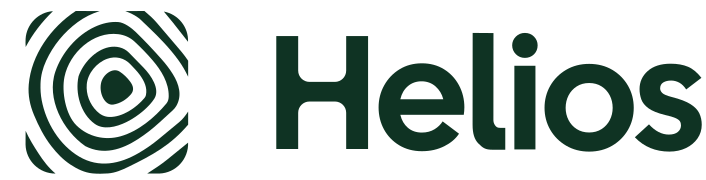

H
57%Fit
Helios Intelligence
At-home molecular body test: 1,000+ biomarkers from a drop of blood: consumer health paid out of pocket, like System; in Y Combinator's newest batch.
Y CombinatorHelios Intelligence has no product shot, so today the masthead falls back to a gray H. Each option below builds the picture from heliosinc.ai itself: its ring logo, its cypress green and cream, and its painted sky. Only the picture changes; the words, buttons and layout are the live site's own markup.
The fallback letter tile on a gray field.
At-home molecular body test: 1,000+ biomarkers from a drop of blood: consumer health paid out of pocket, like System; in Y Combinator's newest batch.
Y CombinatorThe ring mark sits large on Helios's own cypress green, with a slow cream glow, and a soft echo of the rings travels outward like a heartbeat.
Motion: Breathing glow every 6 s; an echo ring leaves the mark every 4 s (each travels for 8 s). Ambient, loops.
Scout Needs: Helios's logo (SVG or large icon) and its main color. Works for any startup with a logo.

At-home molecular body test: 1,000+ biomarkers from a drop of blood: consumer health paid out of pocket, like System; in Y Combinator's newest batch.
Y CombinatorThe mark blown up past the frame, so its rings sweep the whole masthead like a topographic map, quiet enough to read the name over it. A crisp copy of the mark anchors the right side.
Motion: The field drifts very slowly (one cycle every 60 s). Ambient, loops.
Scout Needs: Helios's logo and its main color. Best for marks made of lines or rings.
At-home molecular body test: 1,000+ biomarkers from a drop of blood: consumer health paid out of pocket, like System; in Y Combinator's newest batch.
Y CombinatorHelios's own painted sky from heliosinc.ai, with its green lockup in the open sky on the right. The masthead wears the startup's real brand world, not one Scout made up.
Motion: The clouds drift sideways very slowly (one cycle every 70 s). Ambient, loops.
Scout Needs: The site's own hero art plus the logo. Only for startups whose site has hero art.

At-home molecular body test: 1,000+ biomarkers from a drop of blood: consumer health paid out of pocket, like System; in Y Combinator's newest batch.
Y Combinator